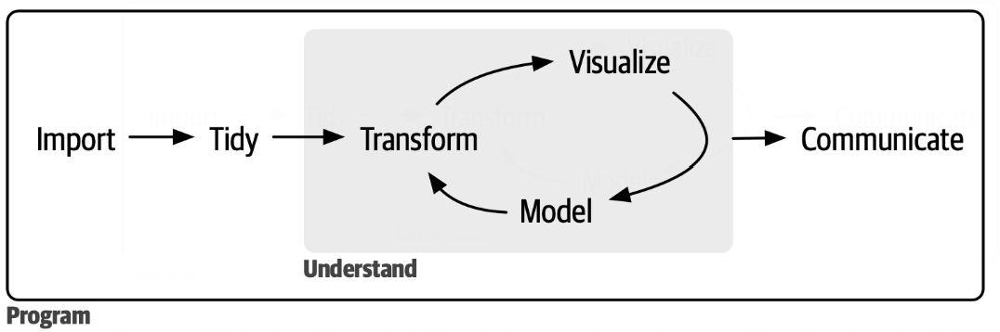

Lecture 1: Course Introduction
Wilfrid Laurier University
2026-09-10
Instructor: Agassi Iu
Education: Closely finishing my PhD in the math department at WLU (previously in BBA/Fin Math DD)
Experience: Previously taught ST474/674 Monte Carlo Methods in Spring 2025
Hobbies: Cooking, dancing, soccer, badminton
Office Hours
Wednesdays 14:00–16:00 in LH3073, or by appointment.
🧑🏫 Teaching Approach
🚪 Open Door Policy
🧠 Analytical Mindset
Formulate precise questions, structure complex problems, and analyze data objectively without bias.
💻 Technical Fluency
Build confidence with modern open-source tools, repeatable workflows, and clean coding principles.
💬 Data Communication
Translate statistical results into compelling visual narratives for technical and business audiences.
| Category | Weight | Frequency |
|---|---|---|
| Laboratories | 30% | Weekly on Mondays |
| Participation | 5% | Every class |
| Capstone Project | 15% | Multiple due-dates |
| Midterm Exams | 20% | Twice (see syllabus) |
| Final Exam | 20% | Final exam period in December |
🐍 Coding Environment
I will teach the course using the software R. You will be asked to complete assignments, labs, projects, and even exams in R.
✉️ Communications
Please always check your emails. I will send you emails with updates on the course assessments, should there be any.
🌐 Course Hub
Access announcements, submit assignments, and engage in peer discussions via MyLearningSpace. I will also update a new course webpage throughout the semester.
📅 Start Early
Technical assignments take time to debug. Avoid last-minute coding stress.
🏋️ Practice Daily (I hope you do)
Programming is a muscle. Practicing 30 minutes daily is far better than cramming every last-minute.
❓ Ask Questions Early
Reach out when stuck for more than 15 minutes. Use office hours liberally.
👥 Form Study Groups
Connect with classmates to discuss ideas and keep each other accountable.
In-Class
Out-of-Class
University Policy
My Policy
My Goal
I hope to give you an enjoyable learning experience, by showing you that this AI (Agassi Iu) is better at teaching than the AI you use at home.

DATA100 Specifically
Data Analysis (for this course at least) mostly concentrates on Preparation and Refinement.
A concept that is still in the making, may take many shapes and forms for different people. Key ideas:
Look at data from the point of view of a scientist: do experiments, make hypothesis, test hypothesis by more experiments, rinse and repeat, …, arrive at some conclusion.
Look at decision making of all kinds from the point of view of data: tell / refute a story with data, make / break a decision by data, persuade / disillusion using data…
Data science is a tool. The correctness of the conclusion not only depends on the correctness of the inputs, but also depends on interpretation. It is also important that the tool is used responsibly.
install.packages("package_name") in the console to install R packages on your own machine.
install.packages("ggplot2") to install ggplot2.library(package_name) to initialize already installed packages.
library(ggplot2) to load ggplot2.| Operation | Description |
|---|---|
+ |
Addition |
- |
Subtraction |
* |
Multiplication |
/ |
Division |
^ |
Exponent |
%% |
Modulus (Remainder from division) |
%/% |
Integer Division |
# is used to add comments to R scripts.Relational operators are used to compare between values:
| Operation | Description |
|---|---|
< |
Less than |
> |
Greater than |
<= |
Less than or equal to |
>= |
Greater than or equal to |
== |
Equal to |
!= |
Not equal to |
=, <-, and -> can be used to assign values to variables
x=2, x<-2, and 2->x are equivalent.<- but feel free to use =.x5 is OK but 5x is NOT.)x_5 and x.5 are OK but not x-5).x and X would be different variables).exp(3) would compute \(e^3\) (approximately) and display the result.x<-exp(3) would compute \(e^3\) and store the result in x but would not display anything.x we would need to run print(x) or just x.ls() or objects() to generate a list of objects. in workspace.rm() to remove objects from the current workspace.
rm(x,y,z) will remove the variables x, y, and z from the workspace.rm(list=ls()) will remove all objects from the workspace.| Function | Description |
|---|---|
exp(x) |
Computes the exponential function \(e^x\). |
log(x) |
Computes the logarithmic function \(\log_e(x)\). |
sqrt(x) |
Computes the square root \(\sqrt{x}\). |
factorial(x) |
Computes the factorial of a positive integer \(x!\). |
sin(x) |
Computes the sine of x in radians. |
abs(x) |
Computes the absolute value of x. |
? to learn more about how a function works.
?sqrt would produce a brief explanation of the sqrt function in a separate window.Edit and run this cell right here in the slide — no local R install needed for anyone in the room.
What are the final values of x and y after following this sequence of commands? Predict first, then try it below to confirm.
Notes: